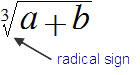
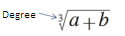

The horizontal bar in the radical symbol tells how much of the expression is to be used.
In this expression:
the bar stretches across the whole expression "p - q". So this means we subtract q from p, then find the square root of the result.
If it has only covered the 'p' like this: it would mean find the square root of p then subtract q from the result.
The bar acts like parentheses, telling you how to group items and the order of calculation.
The radical sign is a symbol that means "root of". The length of the horizontal bar is important. See note below. When used in an expression like the one above, the whole expression is called a radical.
The three components of a radical expression are

The number of times the radicand is multiplied by itself. 2 means square root, 3 means cube root. After that they are called the 4th root, 5th root and so on. If this is missing, it is assumed to be 2 - the square root.